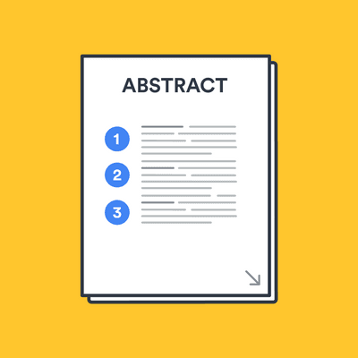

-

Lecture 01
Introduction to professional SkillsProfessional skills, also known as soft or employability skills, are essential interpersonal competencies required for job success. They enhance technical expertise, making individuals more valuable and versatile. Unlike technical abilities, professional skills are transferable across various sectors and jobs. Necessary Skills for Employment are Communication Skills, Critical Thinking and Problem-Solving Skills, Teamwork and Collaboration, Adaptability and Flexibility, Time Management, Leadership
-
Lecture 02
CV and Cover LetterTailor your CV and cover letter to match job requirements, emphasizing achievements and skills. Ensure error-free content, use keywords for automated screenings, and seek feedback from mentors or professionals for effective representation of qualifications. Consider incorporating specific examples or metrics in your CV to provide concrete evidence of your accomplishments and capabilities. Additionally, keep your CV focused, ensuring it aligns with the job description and highlights your most relevant experiences.
-
Lecture 03
Interview SkillsA job interview is a discussion between a candidate and a company representative to exchange information and documentation. Key communication skills include non-verbal cues, listening, responding, and questioning. Effective communication follows the 6 C's: Clear, Concise, Correct, Complete, Concrete, Courteous, and Confident. The interview structure includes an introduction, presenting qualifications, asking questions, and closing the discussion.
-

Lecture 04
Portfolio WritingA portfolio showcases skills, achievements, and experiences. To create an effective one, select diverse projects relevant to your target job and organize them logically by type or skill. Detail goals, processes, outcomes, and your contributions for each project. Ensure a clean, professional design with consistent fonts and layouts. Include visual elements such as charts, graphs, or photographs to enhance the presentation and provide additional context for projects.
-
Lecture 05
Email EtiquetteEmail etiquette is essential for professional communication. Start with a clear subject line and address the recipient politely. Keep emails concise with proper grammar and punctuation. Respond promptly and proofread before sending. Avoid unnecessary recipients and maintain a professional tone throughout. Be mindful of sensitive information and use appropriate confidentiality measures when necessary to uphold security and trust in your correspondence.
-
Lecture 05
Telephone EtiquetteTelephone etiquette is essential for effective communication. Always answer promptly and courteously, identifying yourself and your company. Speak clearly and at a moderate pace, and listen attentively to the caller. Avoid interrupting, and if you need to put the caller on hold, ask permission first and keep the wait time minimal. When transferring a call, provide the caller with clear instructions and ensure they reach the right person. Always end the call politely, thanking the caller for their time.
-
Lecture 06
Negotiation SkillsConducts thorough research and preparation before negotiations, understanding both parties' needs, goals, and potential areas of compromise. Clearly articulates one's own position while actively listening to the other party's concerns, fostering open and transparent communication. Demonstrates strong problem-solving skills, finding creative solutions that meet the interests of all parties involved.
-
Lecture 07
Speaking SkillsDemonstrates clear and articulate speech, ensuring that words are pronounced accurately and ideas are communicated distinctly.Exhibits confidence while speaking, maintaining eye contact, using gestures appropriately, and projecting a strong and engaging presence.Adapts communication style to suit different audiences and situations, whether it's a formal presentation, a team meeting, or a casual conversation.
-

Lecture 08
Abstract writingAn abstract is a concise summary of a research paper or thesis, essential for selection and indexing. It helps readers assess relevance and facilitates quick retrieval in databases. Abstracts are needed for journal submissions, research grants, theses, conference proposals, and should include the purpose, problem, methodology, results, and implications. Effective abstract writing is crucial for clearly communicating research findings and highlighting the importance of one's research.
-
Lecture 09
Project Proposal WritingProject proposal writing involves creating a detailed plan to present an idea for approval. It outlines the project's objectives, methodology, timeline, and budget, aiming to persuade stakeholders of its feasibility and value. A well-crafted proposal clearly defines the problem, proposes a solution, and demonstrates the project's potential impact, ensuring that all necessary details are communicated effectively to secure support and funding.
-
Lecture 10
Food FestivalOur group made an appearance at the lively Flavor Fiesta food festival. This festival, which was organized by the Year 2 Semester 2 students at SLIIT Academy, was the ideal setting for our team's food venture.The overall idea of our project is to sell Achcharu, Muffins and Faluda. As we planned at the food festival day all the items were sold and the entire store was empty when the food festival finished. After selling all those items we get some profits.
-
Lecture 11
Dining EtiquetteDining etiquette is crucial for positive impressions in social and professional settings. Begin with napkin placement, wait for everyone to be served, and chew with your mouth closed. Use utensils properly, engage in polite conversation, pace yourself, and never reach across the table. Always thank the host or server, and when finished, place your napkin to the left of your plate and express gratitude before leaving.
-
Lecture 12
Emotional intelligenceEmotional intelligence is about recognizing and managing our own feelings and understanding others'. It includes empathy, self-awareness, and social skills. People with high emotional intelligence can handle stress, build relationships, and make good decisions, vital for success in both personal and professional life. Emotional intelligence helps us understand and manage emotions, leading to stronger relationships and better decision-making in all aspects of life.